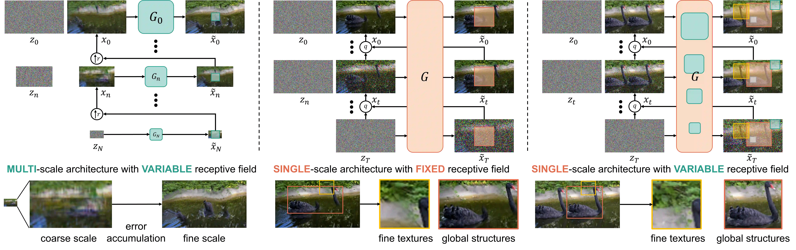
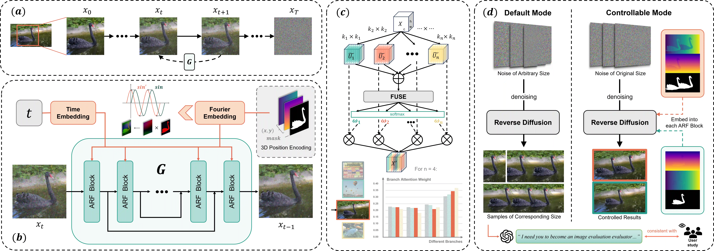
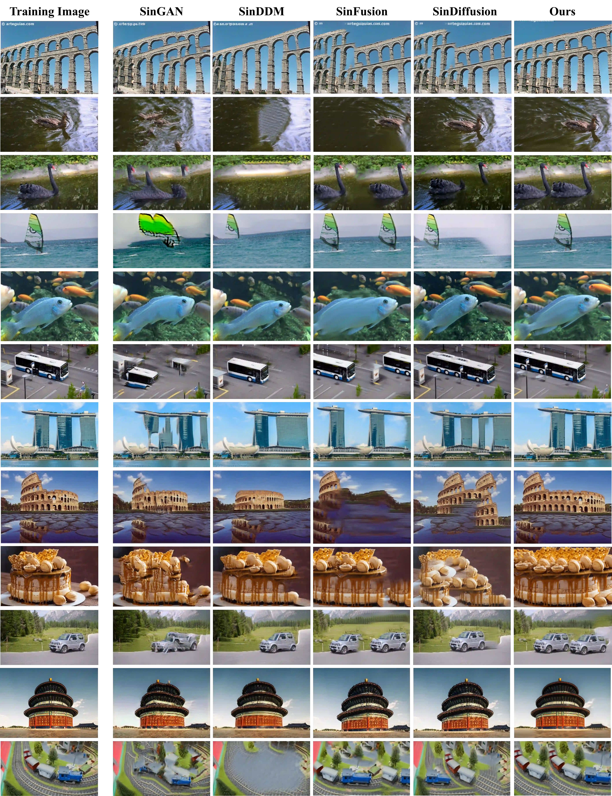
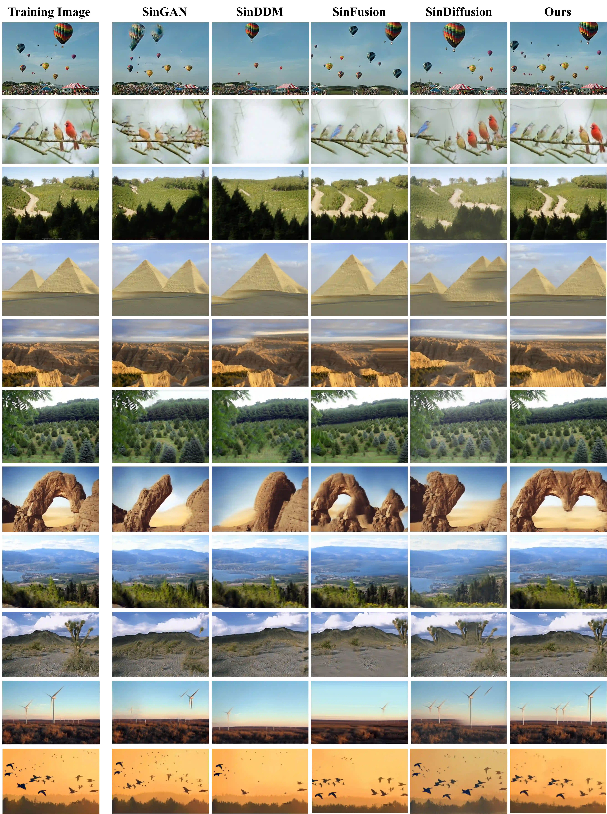
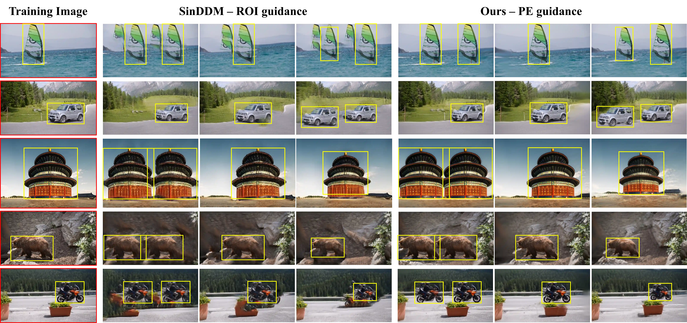
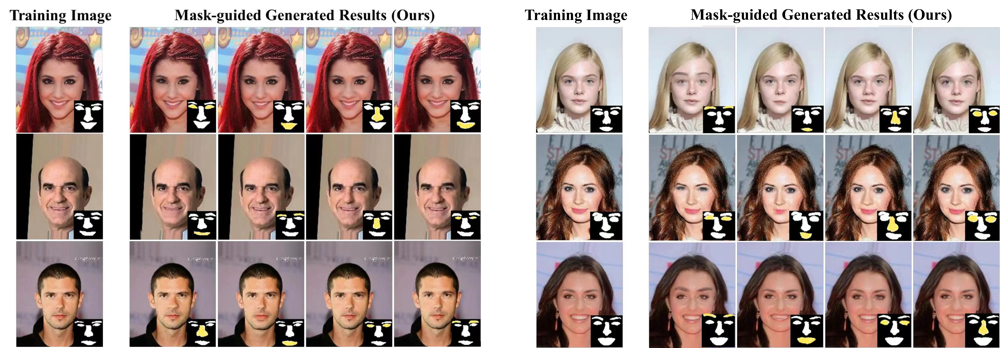
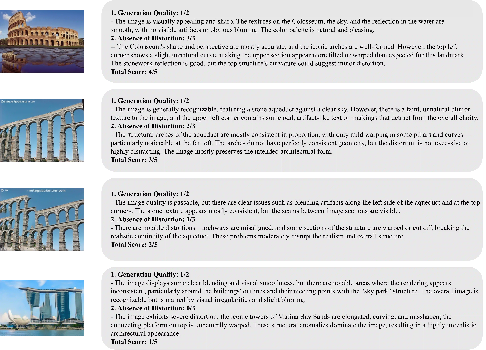
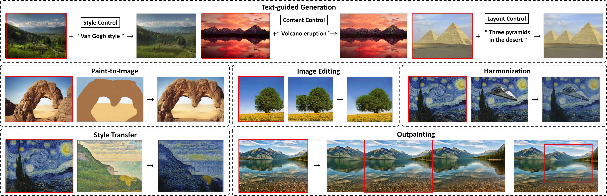

StructDiff: A Structure-Preserving and Spatially Controllable Diffusion Model for Single-Image Generation
StructDiff is a single-image diffusion framework that improves structural preservation with adaptive receptive fields and introduces 3D positional encoding for controllable generation, editing, and layout manipulation.
Abstract
This paper introduces StructDiff, a generative framework based on a single-scale diffusion model for single-image generation. Single-image generation aims to synthesize diverse samples with similar visual content to the source image by capturing its internal statistics, without relying on external data. However, existing methods often struggle to preserve the structural layout, especially for images with large rigid objects or strict spatial constraints. Moreover, most approaches lack spatial controllability, making it difficult to guide the structure or placement of generated content. To address these challenges, StructDiff introduces an adaptive receptive field module to maintain both global and local distributions. Building on this foundation, StructDiff incorporates 3D positional encoding (PE) as a spatial prior, allowing flexible control over positions, scale, and local details of generated objects. To our knowledge, this spatial control capability represents the first exploration of PE-based manipulation in single-image generation. Furthermore, we propose a novel evaluation criterion for single-image generation based on large language models (LLMs). This criterion specifically addresses the limitations of existing objective metrics and the high labor costs associated with user studies. StructDiff also demonstrates broad applicability across downstream tasks, such as text-guided image generation, image editing, outpainting, and paint-to-image synthesis. Extensive experiments demonstrate that StructDiff outperforms existing methods in structural consistency, visual quality, and spatial controllability.
Method
The method section below combines the architectural comparison figure and the full pipeline overview from the paper.

Compared with multi-scale and fixed single-scale paradigms, StructDiff keeps a single-scale architecture while dynamically adapting the perceptual scope to the image content.

The full pipeline includes ARF blocks, Fourier-embedded positional encodings, and two generation modes: default random sampling and controllable generation guided by customized positional encodings.
Results
This section summarizes both StructDiff's diverse generation results under default sampling and its positional-encoding-driven controllable generation results.
Diverse Generation Results (Default Sampling)
Qualitative comparisons on Mulmini-L and Mulmini-N show that StructDiff generates diverse samples while preserving large structures, local details, and overall realism more faithfully than competing single-image generation methods. Click each figure to open an enlarged in-page preview for a clearer inspection of structural details and method differences.
Mulmini-L

Partial qualitative comparison on Mulmini-L. StructDiff preserves large object structure and image realism more faithfully than competing single-image generation methods.
Mulmini-N

Partial qualitative comparison on Mulmini-N. StructDiff maintains stronger structural consistency and more stable local details across diverse natural image categories.
Positional-Encoding-Driven Results
By injecting customized positional encodings, StructDiff supports controllable generation and localized editing while maintaining structural coherence and visual consistency. Click each figure to open an enlarged in-page preview for a clearer view of the position control and local editing effects.

Qualitative comparison of spatially controllable generation. StructDiff produces sharper edges and stronger background consistency under position control.

Fine-grained control through mask modification. StructDiff enables localized semantic edits while preserving the overall facial layout and image realism.
LLM Evaluation
To make the GPT-4o-based quality assessment more transparent, we provide the complete evaluation prompt together with representative examples for different score levels.
Complete Prompt and 5/5 Example
The figure on the right contains the complete GPT-4o evaluation prompt together with a representative 5-point example. Click the image to open an enlarged in-page preview for easier reading, or use the button to copy the full prompt text.
Score-Level Examples (1-4 Points)
These examples illustrate how the same prompt distinguishes outputs from 1 to 4 points under different levels of visual quality and structural distortion. Click the image to open an enlarged in-page preview for easier comparison.

The figure presents representative cases scored from 1 to 4, showing how GPT-4o penalizes blur, artifacts, warping, and broken structural continuity while rewarding realistic geometry and visual clarity.
Applications

StructDiff supports text-guided generation, paint-to-image, editing, harmonization, and outpainting without retraining.
BibTeX
@article{he2026structdiff,
title={StructDiff: A Structure-Preserving and Spatially Controllable Diffusion Model for Single-Image Generation},
author={He, Yinxi and Liao, Kang and Lin, Chunyu and Wei, Tianyi and Zhao, Yao},
journal={IEEE Transactions on Multimedia},
year={2026}
}